Provisioning z/OS
Learn how to provision z/OS demo images on IBM TechZone.
⚠️ Note: Cisco Secure Client is required to access the on-premises z/OS environment provisioned with this collection. If you do not want to, or cannot, install it on your computer, you'll need to provision a Jump Server (a Windows VM that comes with Cisco installed) to connect through.
Overview
IBM TechZone provides on-demand access to pre-configured z/OS demo environments. Each image is configured and ready to use for demonstrations and hands-on labs.
Provisioning Steps
1. Choose an Image
Not sure which image to use? Browse the Image Catalog to see what's available and pick the right one for your demo.
2. Access TechZone
Navigate to IBM TechZone and find the Collection named "z/OS Customized Demo Images".
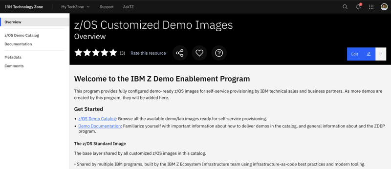
3. Select Your Image
On the left-hand navigation menu, select "z/OS Demo Catalog" and browse the available images and Collections.
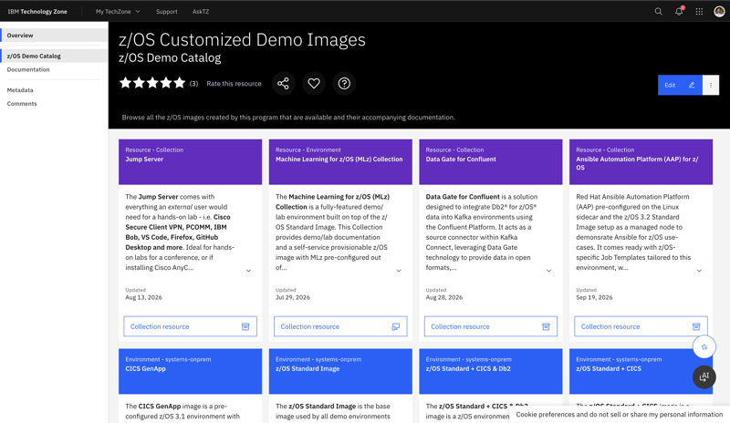
Note: Tiles here are either blue, meaning it is just the environment (usually a simple image, e.g., a base configuration of CICS), or purple, meaning it's a link to a Collection, featuring a configured demo/lab and its corresponding documentation (for example, Machine Learning for z/OS).
4. Submit a Reservation
-
To start a reservation, hover over the button on the desired image that reads "systems-onprem environment". The button text will change to Reserve It. Click it.
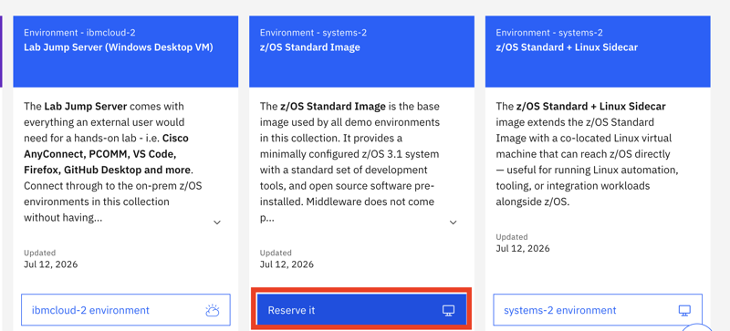
-
This will then open a form for you to fill out with reservation details. Give it a relevant Name and Description.
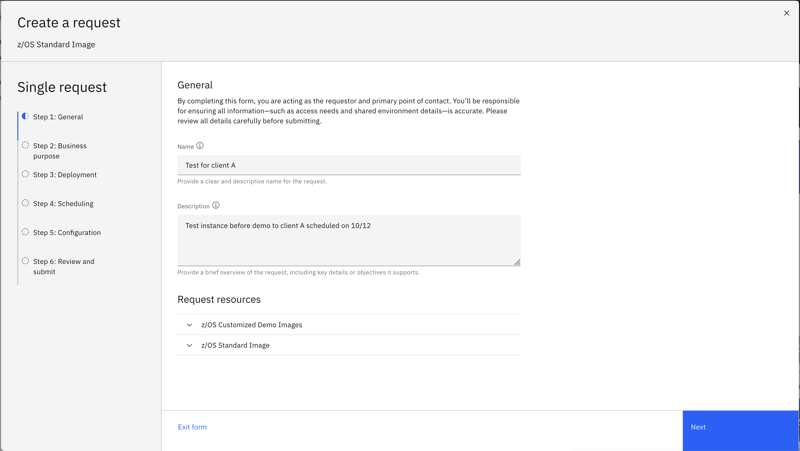
-
Click the Next button on the bottom right that turns blue after filling in the required details.
-
Then select a Purpose: The four options are Demo, Pilot, Learning, and Test.
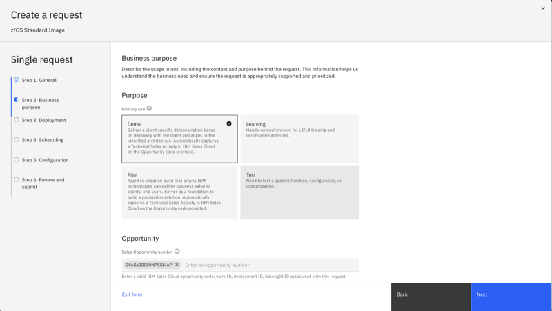
- The two longer-lasting purposes, Demo and Pilot, require a valid IBM Sales Cloud Opportunity ID. Just the ID, not the full URL.
- Click the dropdown list to choose a region. Only
pok-onprem-systemsis available at the moment.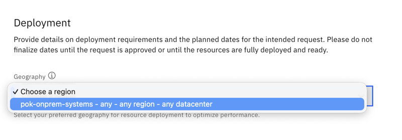
- On the next page, you will be presented with the duration Policy, corresponding with the selected Purpose, as well as the option to schedule provisioning.
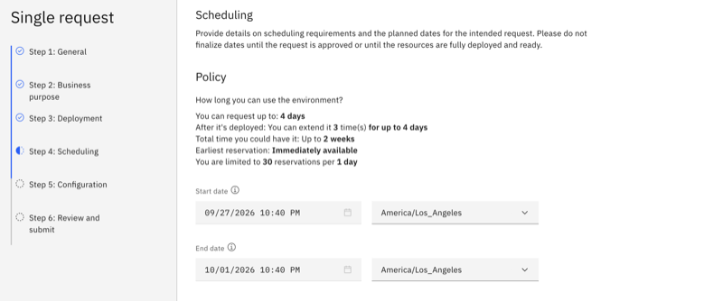
Remember to allow for ~1 hour for provisioning + ample time to prepare for the demo. Ideally, take a video of the demo ahead of time if possible, just in case.
- On the Configuration, you are presented with different options to customize the instance. Depending on the pattern, you may see different options than what's in the screenshot. If you are requesting this environment for an external user (for a hands-on lab, for example), make sure to add at least one VPN ID here.
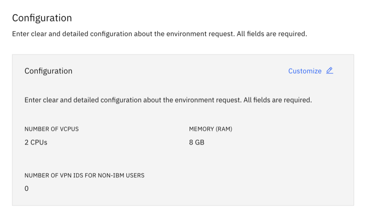
- Click on the Review button.
- On the Review and Submit screen, scroll all the way to the bottom and click on the checkbox to agree to the terms, and then click the Submit button.
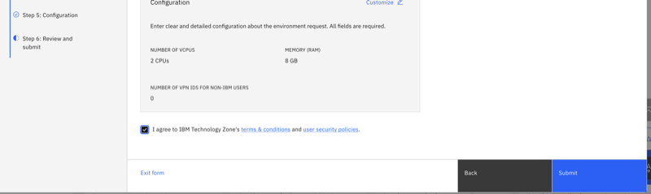
- It will take you to a page that says "Success".
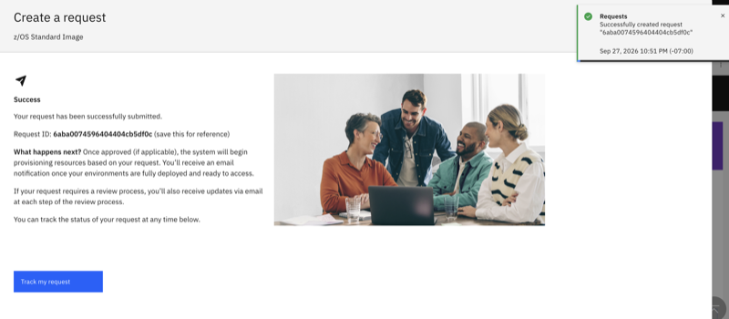
- Click on the Track my request button there. You can navigate there later by clicking on the My TechZone dropdown at the top of the page to go to My Requests at any time.
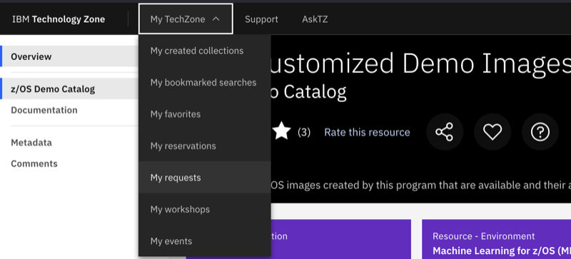
- It should show up there (it might take a minute or two to appear), and show its status as Provisioning.
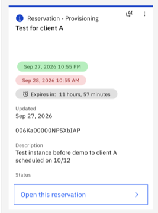
- When the environment has provisioned successfully (usually takes ~1 hour), your request will turn to green and show status Ready.
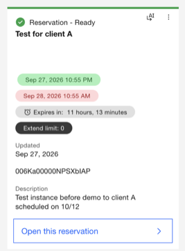
- You will receive an email from
noreply@techzone.ibm.comwith subject "Ready: <given request name> on IBM Technology Zone" that contains your Request ID. Click on the View your request button. You can also navigate to My TechZone and My Requests and click on Open this reservation.
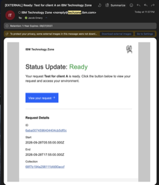
- If the environment fails to provision, you will receive an email from
noreply@techzone.ibm.comwith subject "Failed: < given request name> on IBM Technology Zone". To see the details of a failed reservation, use the Filter by Status dropdown and select statuses Failed, Deleted or Expired. - Go to the Contact & Support page for information on where to get help with your failed reservation.
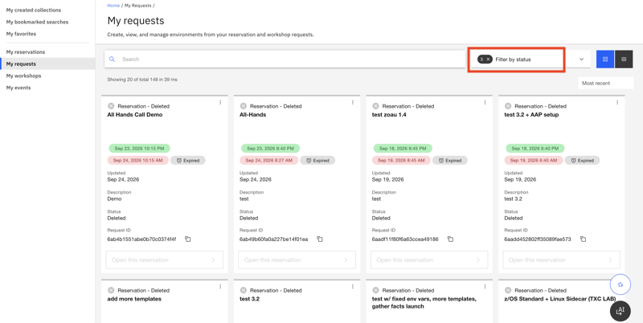
What You'll Receive
Once 'Ready', the following information is provided:
- z/OS IP address
- Linux host IP address
- z/OS passphrase (generated at provisioning — use this to log in via TSO or SSH)
- VPN connection details (if requested)
- A private key (for SSH access)
Next Steps
- Connecting to Your Instance - Set up VPN and terminal access